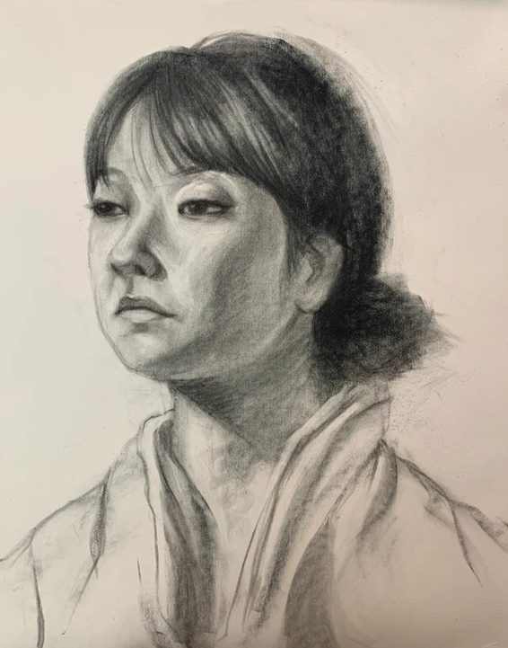
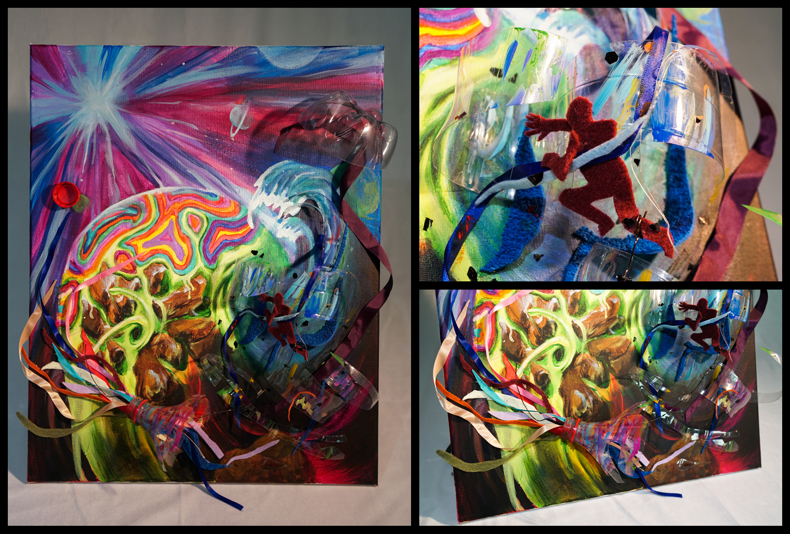
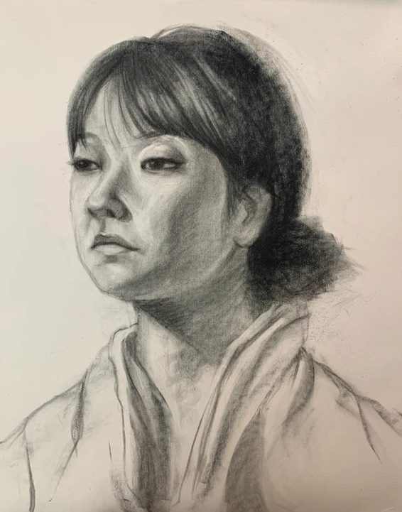
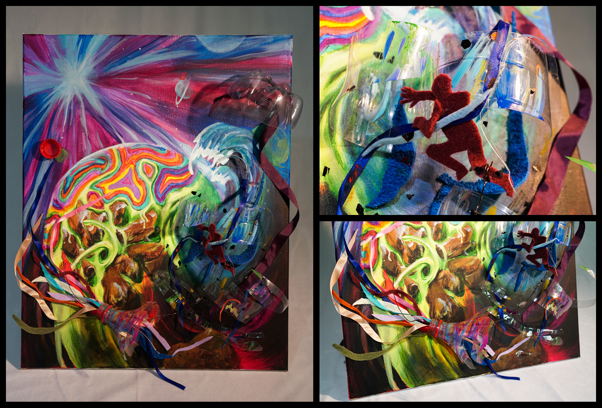
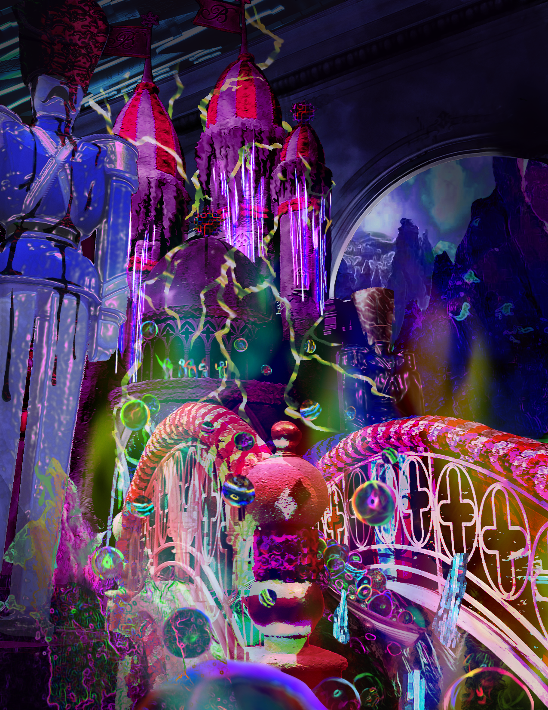
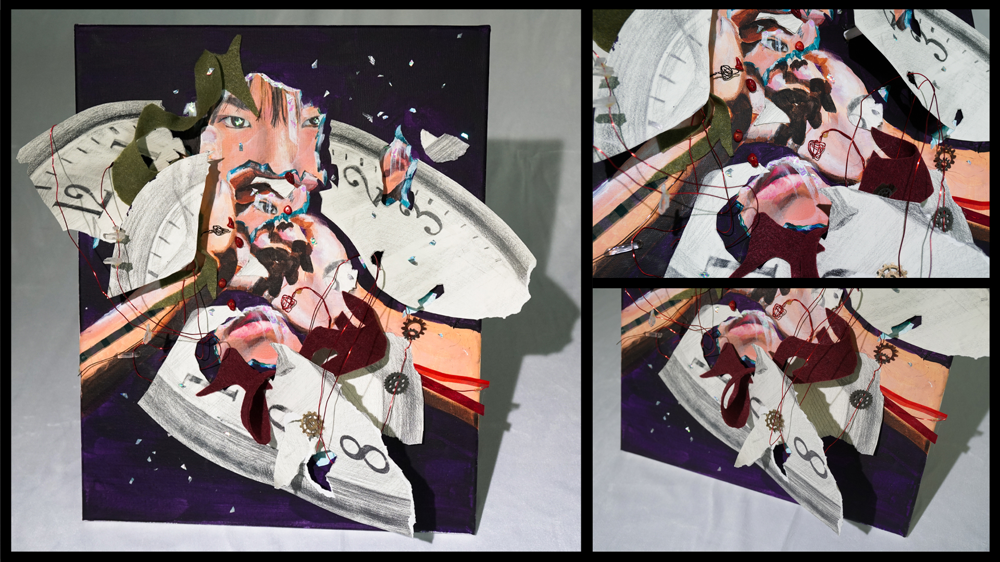
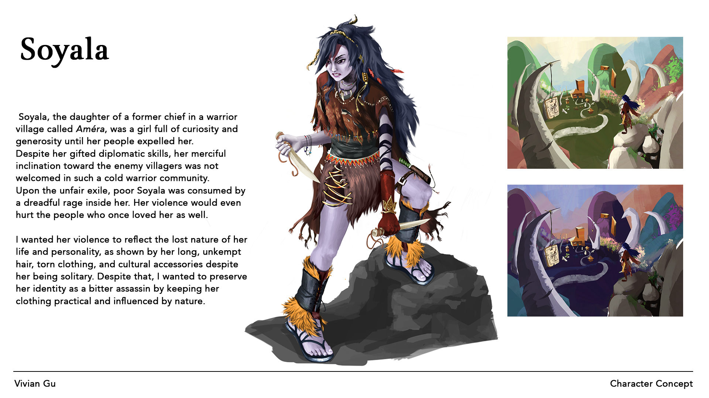
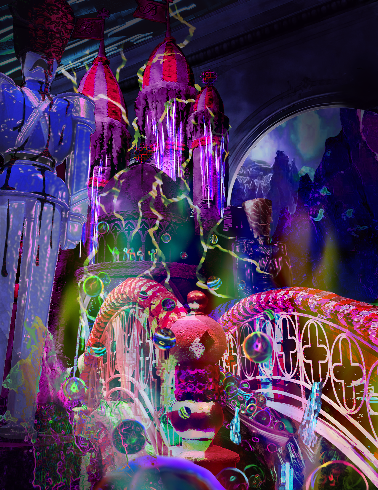
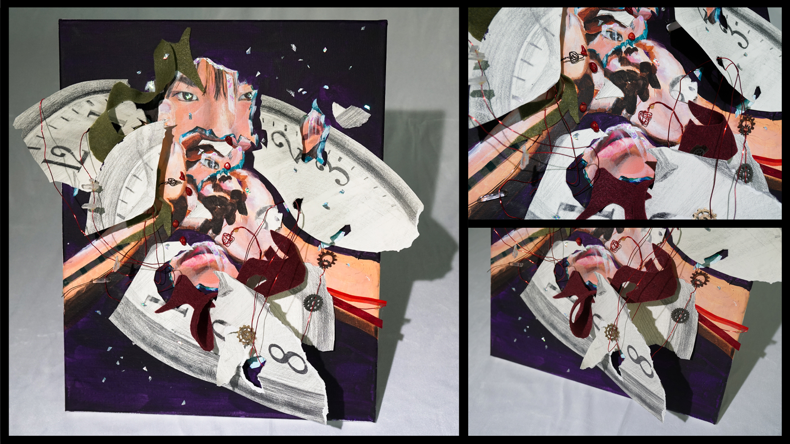
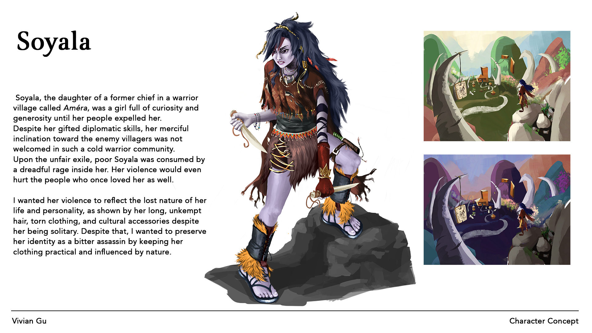

Hello!
I'm Vivian Gu
Sophomore @ Georgia Tech
Computational Media Major, GPA: 3.90
Computational Media Major, GPA: 3.90

The SKY's the limit.
I'm passionate about the blend of technology and creative arts. Some of my interests include:
- Game developement
- Tech art/VFX
- Digital and 3D art
I'm currently working on projects relating to computer graphics and game design.
I'm also looking for an internship in order to gain real-life work experience!
Here are some of my PROJECTS:
Box1
Box1
Box1
Box1
Box1
Box1
Box1
Box1
Here is some of my ART:
 



 





These things GROUND me.
I enjoy doing many things, including:
- Gaming - League of Legends, TFT, Stardew Valley, Geoguessr
- Watching shows - Jojo's bizarre adventure (part 4 is the best :P)
- Anything music related - Piano, singing
- Anything creative - Dance, crochet, traditional art